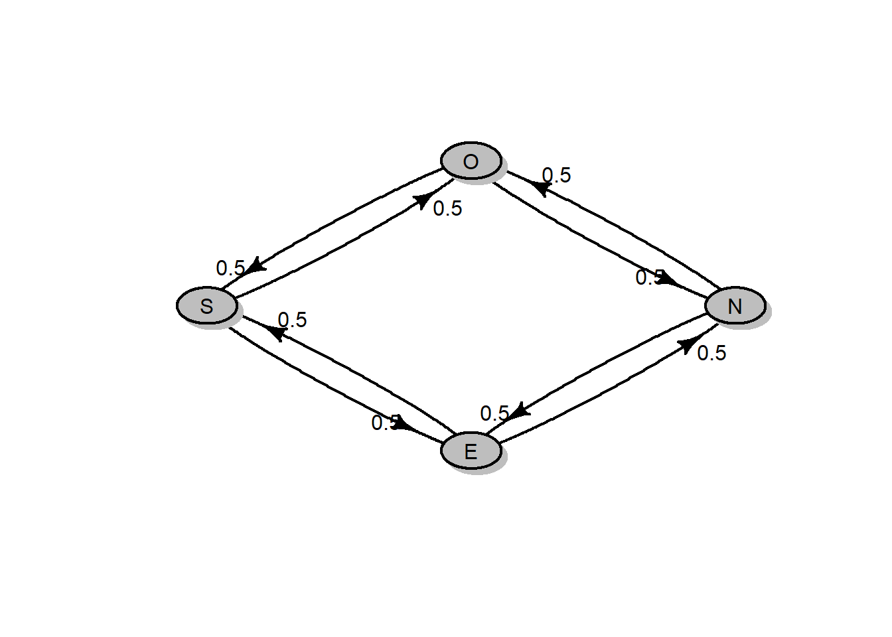

Chapitre 2 Chaînes de Markov
La notion de ce qu’on appelle aujourd’hui une chaîne de Markov a été conçue par le mathématicien russe A.A. Markov.
Une chaîne de Markov est un système mathématique qui subit des transitions d’un état à un autre selon un ensemble donné de règles probabilistes. Les chaînes de Markov sont des processus stochastiques, mais ils diffèrent en ce sens qu’ils doivent manquer de “mémoire”. Autrement dit, la probabilité de l’état suivant du système ne dépend que seulement de l’état actuel du système.
Les chaînes de Markov sont largement utilisées dans de nombreux domaines tels que la finance, la théorie des jeux et la génétique.
2.1 Définitions et exemples
Soit \(X_0, X_1,\ldots, X_n, \ldots\) une suite de variables aléatoires sur un espace de probabilité \((\Omega,\mathcal{A}, \mathbb{P})\) à valeurs dans \(E\) (fini ou infini dénombrable).
Pour tout \(i,j \in E\), \(p_{ij}\) peut alors s’interpréter comme la probabilité d’aller à l’état \(j\) sachant qu’on se trouve à l’état \(i\) à l’instant précédent.
Par exemple, la matrice suivante est une matrice stochastique
\[ P=\left( \begin{array}{cc} 0.2 & 0.8\\ 0.4 & 0.6 \end{array} \right) \]
[,1] [,2]
[1,] 0.2 0.8
[2,] 0.4 0.6 [,1] [,2]
[1,] TRUE TRUE
[2,] TRUE TRUE[1] TRUE TRUEA toute matrice de transition, on peut associer un \(\color{blue}{\mathbf{\text{graphe orienté}}}\). Les sommets sont les états de la chaîne, et l’orientation est donnée par la probabilité \(p_{ij}>0\).
Le graphe de la chaîne associé à la matrice de transition définie ci-dessus est donné par:

# représenter un graphe sous R
# install.packages(diagram)
library(diagram) # charger l'extension 'diagram'
P<-matrix(c(0.2,0.4,0.8,0.6),nc=2)
colnames(P) <- c("S1", "S2")
rownames(P) <- c("S1", "S2")
plotmat(t(P), pos=c(2),box.size = 0.05, box.prop = 0.7,
box.col = "gray", arr.pos = 0.6, relsize = 1.1)
L’ensemble des états, \(E\), est formé de 4 états {N, E, S, O}. La probabilité de se déplacer à l’état \(E\) sachant qu’on se trouve à l’état \(N\) est: \[ \mathbb{P}(X_{n+1}=E|X_n=N)=p_{12}=0.5 \] Le graphe orienté correspondant à cette matrice de transition est:
nn=c("N","E", "S","O")
P1=matrix(rep(c(0,0.5,0,0.5,0.5,0,0.5,0),2), nc=4,
dimnames = list(nn,nn))
plotmat(t(P1), box.size = 0.05, box.prop = 0.6, box.col = "gray",
arr.pos = 0.7, relsize = 0.9)
On déduit la matrice de transition \[ P=\left( \begin{array}{ccc} 0.85 & 0.06 & 0.09 \\ 0.05 & 0.87 & 0.08 \\ 0.5 & 0.25 & 0.25 \end{array} \right) \] On note qu’un jour haussier est suivi par un autre jour haussier dans 85% des temps, par un jour baissier dans 6% des temps et par un jour de consolidation dans 9% des temps.Exercise 2.1 Dans un certain pays, il ne fait jamais beau deux jours de suite. Si un jour il fait beau, le lendemain il peut neiger ou pleuvoir avec autant de chances. Si un jour il pleut ou il neige, il y a une chance sur deux qu’il ait changement de temps le lendemain, et s’il y a changement, il y a une chance sur deux que ce soit pour du beau temps.
- Former une chaîne de Markov et en déterminer sa matrice de transition. Représenter le graphe orienté associé.
- Si on suppose l’on a que deux états (beau temps et mauvais temps), déterminer la matrice de la nouvelle chaîne ainsi obtenue.
Solution 1.1
- On a l’ensemble des états suivants \(E=\{B,P,N \}\). Le temps pour un jour ne dépend que seulement de temps du jour précédent. On a donc un processus de Markov.
Il ne fait jamais beau deux jours de suite \(\Longrightarrow \mathbb{P}(X_{n+1}=B|X_n=B)=0\).
Si un jour il fait beau, le lendemain il peut neiger ou pleuvoir avec autant de chances \(\Longrightarrow \mathbb{P}(X_{n+1}=P|X_n=B)=\mathbb{P}(X_{n+1}=N|X_n=B)=0.5\).
Si un jour il pleut ou il neige, il y a une chance sur deux qu’il ait changement de temps le lendemain \(\Longrightarrow P(X_{n+1}=P|X_n=P)=\mathbb{P}(X_{n+1}=N|X_n=N)=0.5\).
et s’il y a changement, il y a une chance sur deux que ce soit pour du beau temps \(\mathbb{P}(X_{n+1}=B|X_n=P)=\mathbb{P}(X_{n+1}=B|X_n=N)=0.5\times 0.5=0.25\).
Ainsi, la matrice stochastique est donnée par: \[ P=\left( \begin{array}{ccc} 0 & 0.5 & 0.5\\ 0.25 & 0.5 & 0.25\\ 0.25 & 0.25 & 0.5 \end{array} \right) \] et le graphe orienté associé est:
noms=c("B","P","N")
PB=matrix(c(0,0.25,0.25,0.5,0.5,0.25,0.5,0.25,0.5), nc=3,
dimnames = list(noms,noms))
plotmat(t(PB), box.size = 0.06, box.prop = 0.5, box.col = "gray",
arr.pos = 0.6, relsize = 0.85,dtext = 0.6)- Le nouvel ensemble des états est \(E_1=\{B, M \}\), \(M\) pour désigner mauvais temps (soit il pleut, soit il neige).
\[\mathbb{P}(X_{n+1}=B|X_n=M)=\mathbb{P}(X_{n+1}=B|X_n=P)+\mathbb{P}(X_{n+1}=B|X_n=N)=0.5+0.5=1\]
\(\mathbb{P}(X_{n+1}=B|X_n=B)=0\).
\[\begin{align*}
\mathbb{P}(X_{n+1}=M|X_n=M)&=\mathbb{P}(X_{n+1}=P|X_n=P)+\mathbb{P}(X_{n+1}=P|X_n=N)\\
& = \mathbb{P}(X_{n+1}=N|X_n=N)+\mathbb{P}(X_{n+1}=N|X_n=N)\\
&= \dfrac{1}{2}+\dfrac{1}{4}= \dfrac{3}{4}
\end{align*}\]
\[\begin{align*}
\mathbb{P}(X_{n+1}=M|X_n=B)&=\mathbb{P}(X_{n+1}=P|X_n=B)=\mathbb{P}(X_{n+1}=N|X_n=B)\\
&= \dfrac{1}{4}
\end{align*}\]
Ainsi, la matrice de transition d’espace d’états \(\{B,M\}\) est:
\[ P_1=\left( \begin{array}{cc} 0 & 1\\ \frac{1}{4} & \frac{3}{4} \end{array} \right) \]
2.2 Loi des \(X_n\)
Le comportement d’une chaîne de Markov \(X\) dépend entièrement de sa matrice de transition \(P\), et de la position initiale \(X_0\). On appelle \(\mu_0\) la \(\color{blue}{\mathbf{\text{loi initiale}}}\) de \(X\), c’est une mesure définie par \[ \mu_0(x)=\mathbb{P}(X_0=x) \] Connaissant \(\mu_0\) et \(P\), on peut calculer directement la loi de \(X_n\).
La distribution de \(X_1\) est:
\[\begin{align*} \mathbb{P}(X_1 = j) = \sum_{i=1}^N \mathbb{P}(X_1 = j | X_0 = i)\mathbb{P}(X_0 = i) \\ = \sum_{i=1}^N \mu_0(i) p_{ij}=(\mu_0 P)_j\; \text{ pour tout }j \end{align*}\]
La distribution de \(X_2\) est:
\[\begin{align*} \mathbb{P}(X_2 = j) = \sum_{i=1}^N \mathbb{P}(X_1 = j | X_0 = i)\mathbb{P}(X_0 = i) \\ = \sum_{i=1}^N \mu_0(i) (P^2)_{ij}=(\mu_0 P^2)_j\; \text{ pour tout }j \end{align*}\]
Théoreme 2.1 Soit \(\{X_0, X_1, X_2, \ldots \}\) une CM et \(P\) sa matrice de transition carré d’ordre \(N\). Si la distribution initiale, \(\mu_0\) est donnée, alors la distribution de probabilité de \(X_n\) est donnée par \(\mu_0 P^n\). \[ X_0 \sim \mu_0 \Longrightarrow X_n \sim \mu_0 P \]
Probabilité d’une trajectoire
Rappelons qu’une trajectoire est une séquence de valeurs pour \(X_0, X_1,\ldots, X_n\). La propriété de Markov nous permet de trouver la probabilité de n’importe quelle trajectoire en multipliant la probabilité de départ et toutes les probabilités à un pas ultérieures.
Exemple 2.3 Soit une CM définie par la matrice de transition \[ P=\left( \begin{array}{cccc} 0.2 & 0.4 & 0.1 & 0.3\\ 0 & 0.5 & 0.4 & 0.1\\ 0.1 & 0 & 0.6 & 0.3\\ 0.4 & 0.15 & 0.25 & 0.2 \end{array} \right) \] et de distribution initiale \(\mu_0 \sim (0.3,0.2,0.5,0)\).
- Déterminer \(\mathbb{P}(X_2=2)\).
- Déterminer la probabilité des trajectoires: 1,2,3,4 et 2,3,1,1.
- \(\mathbb{P}(X_2=2)=\left(\mu_0 P^2 \right)_{2}\).
\[\begin{align*} \text{Or } \mu_0 P^2=(0.3,0.2,0.5,0) \left( \begin{array}{cccc} 0.2 & 0.4 & 0.1 & 0.3\\ 0 & 0.5 & 0.4 & 0.1\\ 0.1 & 0 & 0.6 & 0.3\\ 0.4 & 0.15 & 0.25 & 0.2 \end{array} \right) \left( \begin{array}{cccc} 0.2 & 0.4 & 0.1 & 0.3\\ 0 & 0.5 & 0.4 & 0.1\\ 0.1 & 0 & 0.6 & 0.3\\ 0.4 & 0.15 & 0.25 & 0.2 \end{array} \right)\\ = (0.167,0.193,0.41,0.23)\qquad \qquad \qquad \qquad \qquad \qquad \qquad \qquad \qquad \quad \; \end{align*}\]
D’où \(\mathbb{P}(X_2=2)=0.193\).
Sous R, le produit matriciel s’effectue à l’aide de la fonction %*%. Pour la puissance d’ordre \(n \geq 2\) d’une matrice carré, on peut utiliser la fonction %^% définie ci-dessous.
P4=matrix(c(0.2,0,0.1,.4,.4,.5,0,.15,.1,.4,.6,.25, .3,.1,.3,.2), nc=4)
mu0=c(.3,.2,.5,0)
mu0%*%P4%*%P4 # %*% : produit matriciel [,1] [,2] [,3] [,4]
[1,] 0.167 0.193 0.41 0.23# puissance nième d'une matrice carré
power_matrix=function(A,n){
if(n==0) return(diag(rep(1,nrow(A))))
if(n==1) return(A)
if(n>1) return(A%*%power_matrix(A,(n-1)))
}
"%^%"<-power_matrix
P4%^%3 # P4^3 [,1] [,2] [,3] [,4]
[1,] 0.1415 0.259 0.3835 0.216
[2,] 0.1385 0.193 0.4405 0.228
[3,] 0.1925 0.163 0.3885 0.256
[4,] 0.1670 0.244 0.3670 0.222- \(\mathbb{P}(1,2,3,4)=\mathbb{P}(X_0=1)\times P_{12}\times P_{23}\times P_{34}= 0.3 \times 0.4 \times 0.4 \times 0.3 =\) 0.0144.
\(\mathbb{P}(2,3,1,1)=\mathbb{P}(X_0=2)\times P_{23}\times P_{31}\times P_{11}= 0.2 \times 0.4 \times 0.1 \times 0.2 =\) 0.0016.
Pour le calcul de la probabilité d’une trajectoire donnée sous R, on peut utiliser la fonction suivante:
ProbTraj<-function(traj,mu0,X0, P){
n<-length(traj)-1
pi<-NULL
for(k in 1:n) pi[k]<-P[traj[k],traj[k+1]]
mu0[X0]*prod(pi)
}
ProbTraj(c(1,2,3,4),mu0,X0=1,P4)[1] 0.0144[1] 0.0016Exercise 2.2 On considère une CM à trois états dont la matrice de transition est la suivante : \[ P=\left( \begin{array}{ccc} 0.6 & 0.2 & 0.2 \\ 0.4 & 0 & 0.6 \\ 0 & 0.8 & 0.2 \end{array} \right)\] Calculer \(\mathbb{P}(X_2=3|X_0=1)\).
Solution 1.2
\(\mathbb{P}(X_2=3|X_0=1)\) est la probabilité de se déplacer de l’état 1 à l’état 2 en deux étapes. Donc les trajectoires possibles sont: (1,2,3); (1,1,3) ou (1,3,3) avec \(\mu_0=(1,0,0)\). \[\begin{align*} \mathbb{P}(X_2=3|X_0=1)= \left( P^2\right)_{13} =\left( \begin{array}{ccc} 0.6 & 0.2 & 0.2 \\ . & . & . \\ . & . & . \end{array} \right)\left( \begin{array}{ccc} . & . & 0.2 \\ . & . & 0.4 \\ . & . & 0.2 \end{array} \right)\\ = 0.6 \times 0.2 + 0.2 \times 0.6 +0.2 \times 0.2 = 0.28. \end{align*}\]
[,1]
[1,] 0.28# ou encore
# (1,2,3); (1,1,3); (1,3,3)
ProbTraj(c(1,2,3),c(1,0,0),X0=1,P)+ProbTraj(c(1,1,3),c(1,0,0),X0=1,P)+
ProbTraj(c(1,3,3),c(1,0,0),X0=1,P)[1] 0.28Exercise 2.3 On considère une chaîne de Markov à deux états dont la matrice de transition est la suivante : \[ P=\left( \begin{array}{cc} 0.4 & 0.6 \\ 0.6 & 0.4 \end{array} \right)\] Calculer la probabilité de l’événement \(A_3\) de passer pour \(n \leq 5\) trois fois par l’état 2 si la loi initiale est \(\mu_0=(0.3,0.7)\).
Solution 1.3
\(A_3=\{n \leq 5\), on passe 3 fois par l’état 2 \(\}\).
Tout d’abord, déterminons les différentes possibilités.
Si l’état initial est l’état \(\color{blue}{1}\), on aura les possibilités suivantes:
\(x_1^1=(1, 1, 2, 2, 2)\), \(x_1^2=(1, 2,1, 2, 2)\), \(x_1^3=(1 ,2 ,2 ,1 , 2)\) et \(x_1^4=(1 , 2, 2, 2, 1)\)
D’où \(\mathbb{P}_1(A_3)=\mathbb{P}(X=x_1^1)+\mathbb{P}(X=x_1^2)+\mathbb{P}(X=x_1^3)+\mathbb{P}(X=x_1^4)\)
Avec \(\mathbb{P}(X=x_1^1)=\mathbb{P}(X_0=1)\times p_{11}\times p_{12}\times p_{22}\times p_{22}=0.3 \times 0.4 \times 0.6 \times 0.4 \times 0.4=\) 0.01152;
\(\mathbb{P}(X=x_1^2)=\mathbb{P}(X_0=1) \times p_{12}\times p_{21}\times p_{12}\times p_{22}=0.3\times 0.6^3 \times 0.4 =\) 0.02592;
\(\mathbb{P}(X=x_1^3)=\mathbb{P}(X_0=1)\times p_{12}\times p_{22}\times p_{21}\times p_{12}=0.3\times 0.6 \times 0.4 \times 0.6^2 =\) 0.02592;
\(\mathbb{P}(X=x_1^4)=\mathbb{P}(X_0=1)\times p_{12}\times p_{22}\times p_{22}\times p_{21}=0.3\times 0.6^2 \times 0.4^2 =\) 0.01728;
Donc \(\mathbb{P}_1(A_3)= 0.01152+0.02592+0.02592+0.01728=\) 0.08064.
Si l’état initial est l’état \(\color{blue}{2}\), on aura:
\(x_2^1=(2,1, 1, 2, 2)\), \(x_2^2=(2, 1, 2, 1,2)\), \(x_2^3=(2 , 1 , 2, 2, 1)\), \(x_2^4=(2, 2, 1, 2, 1)\), \(x_2^5=(2, 2 , 1 , 1 , 2)\) et \(x_2^6=(2, 2, 2 , 1 , 1)\).
D’où \(\mathbb{P}_2(A_3)=P(X=x_2^1)+P(X=x_2^2)+P(X=x_2^3)+P(X=x_2^4)+P(X=x_2^5)+P(X=x_2^6)\).
\(\mathbb{P}_2(A_3)=0.3192\).
Ainsi \(\mathbb{P}(A_3)=\mu_0(1)\times \mathbb{P}_1(A_3)+\mu_0(2)\times \mathbb{P}_2(A_3)=\) 0.247632.
tab1=matrix(c(1,1,2,2,2,1,2,1,2,2,1,2,2,1,2,1,2,2,2,1),nr=5)
mu0=c(0.3,0.7)
P2=matrix(c(0.4,0.6,0.6,0.4),nc=2)
(probs1=apply(tab1,2,ProbTraj,mu0,1,P2))[1] 0.01152 0.02592 0.02592 0.01728[1] 0.08064tab2=matrix(c(2,1,1,2,2,2,1,2,1,2,2,1,2,2,1,2,2,1,2,1,2,2,1,1,2,2,2,2,1,1),nr=5)
(probs2=apply(tab2,2,ProbTraj,mu0,2,P2))[1] 0.04032 0.09072 0.06048 0.06048 0.04032 0.02688[1] 0.3192[1] 0.2476322.3 Classification des états
L’espace des états d’une CM peut être partitionné en un ensemble de classes communicantes disjointes.
Définition 2.4 On dit que l’état \(j\) est \(\color{blue}{\mathbf{\text{accessible}}}\) à partir de l’état \(i\), s’il existe un entier \(n \geq 0\) tel que \(P^{(n)}_{ij} >0\). On note \(i \longrightarrow j\).
Sur le graphe, si \(i \neq j\), \(i\longrightarrow j\) s’il existe un chemin (orienté) du sommet \(i\) vers le sommet \(j\).
Si \(j\) est accessible à partir de \(i\) et \(i\) est accessible depuis \(j\), on dit que \(i\) et \(j\) \(\color{blue}{\mathbf{\text{communiquent}}}\) et on note \(i \longleftrightarrow j\).On note que si \(i \longrightarrow k\) et \(k \longrightarrow j\), alors \(i \longrightarrow j\) (la relation d’accessibilité est transitive).
D’après le diagramme, on remarque que \(1 \longleftrightarrow 2\), \(2 \longleftrightarrow 3\) et \(4 \longleftrightarrow 5\). Donc on a deux classes communicantes \(\{1,2,3\}\) et \(\{4,5 \}\).
Dans l’exemple précédent:
- La classe \(\{1,2,3\}\) n’est pas fermée car on peut la quitter (\(2 \longrightarrow 4\)).
- La classe \(\{4,5\}\) est fermée car on ne peut pas la quitter.
Définition 2.7 Si la chaîne de Markov ne possède qu’une unique classe, c’est à dire que tous ses éléments communiquent, la chaîne sera dite \(\color{blue}{\mathbf{\text{irréductible}}}\).
Un état \(i\) est dite \(\color{blue}{\mathbf{\text{absorbant}}}\) si \(\{i\}\) est une classe fermée.
Pour étudier la classification d’une CMD sous R, on peut procéder comme suit:
# install.packeges("markovchain") # Installation de l'extension markovchain
library(markovchain)
pp=matrix(c(0.5,0.5,0,0.5,0.25,1/3,0,0.25,2/3), nc=3,
dimnames = list(c("1","2","3"),c("1","2","3")))
cm1=new("markovchain", transitionMatrix=pp)
is.irreducible(cm1) # tester si la CM est irreductible[1] TRUEExemple 2.6 Soit la CMD à quatre états définie par la matrice stochastique \[ P=\left( \begin{array}{cccc} 1/2 & 1/2 & 0 &0\\ 1/2 & 1/2 & 0 & 0 \\ 0& 0 & 1/4 & 3/4\\ 0 & 0 & 0 & 1 \end{array} \right) \] Cette CM possède trois classes: \(\{1,2\}\), \(\{3\}\) et \(\{4\}\), donc elle est non irréductible.
L’états 4 est absorbant car \(\{4\}\) est une classe fermée.p15=matrix(c(0.5,0.5,0,0,0.5,0.5,0,0,0,0,0.25,0,0,0,0.75,1), nc=4,
dimnames = list(c("1","2","3","4"),c("1","2","3","4")))
cm2=new("markovchain", transitionMatrix= p15)
is.irreducible(cm2) # tester si la CM est irréductible[1] FALSE[1] "4"2.4 Temps d’absorption
Dans cette section on se pose la question suivante : Etant donné une chaîne \(X\) et \(x\) dans l’espace d’états \(E\), quel est le temps moyen (éventuellement infini) que met \(X\) à arriver au temps \(x\).
2.4.1 Temps d’arrêt
Pour \(x \in E\) on définit le temps aléatoire \[ T_x = \min\{n \geq 0 : X_n = x\}, \] premier moment où la chaîne atteint l’état \(x\).
Notons que la probabilité d’atteindre \(A\) dépuis \(i\) est \(h_{A|i} = P(T_A < \infty |X_0 = i)\).
\(T_A\) est le temps nécessaire pour atteindre l’ensemble \(A\) pour la première fois. \(T_A\) peut prendre les valeurs \(0,1,2,\ldots , \infty\).
Si la chaîne ne peut jamais atteindre \(A\), alors \(T_A= \infty\).
Le temps d’atteinte est appelé aussi temps d’arrêt. Si \(A\) est une classe fermée, \(T_A\) sera appelé le temps d’absorption et \(h_{A|i}\) la probabilité d’absorption.
- Déterminer le vecteur des probabilités d’ateinte de l’état 4.
- Déterminer le temps moyen d’atteinte de \(A=\{1,4\}\), à partie de 2.
2.5 Simulation d’une chaîne de Markov discrète
2.5.1 Exemple illustratif
L’idée générale pour simuler une chaînes de Markov discrète peut être illustrée par un exemple simple à 2 états. Supposons que notre espace d’états est {1,2} et que la matrice de transition est: \[ P=\left( \begin{array}{cc} 0.2 & 0.8 \\ 0.4 & 0.6 \end{array} \right)\]
Supposons maintenant que notre chaîne de Markov commence à l’état 1 de sorte que \(X_0 = 1\). Puisque nous commençons à l’état 1, nos probabilités de transition sont définies par la première ligne de \(P\). Notre chaîne peut soit rester à l’état 1 avec une probabilité \(P_{11}=0.2\), soit passer à l’état 2 avec une probabilité \(P_{12}=0.8\). Par conséquent, pour simuler \(X_1\), il faut générer une variable aléatoire selon les probabilités \(P_{11} = P (X_1 = 1 | X_0 = 1) = 0.2\) et \(P_{12} = P (X_1 = 2 | X_0 = 0) = 0.8\).
En général, nous pouvons générer n’importe quelle variable aléatoire discrète selon un ensemble de probabilités \(p = \{p_1,\ldots, p_K\}\) avec la méthode de transformation inverse. Notez également que cela équivaut à prendre un seul tirage à partir d’une distribution multinomiale avec un vecteur de probabilité \(p\) - nous utilisons cette méthode dans l’algorithme ci-dessous.
Algorithme
- Obtenir la matrice de transition de probabilité \(S\times S\), \(P\).
- Définir \(t=0\).
- Choisissez un état initial \(X_0 = x_0\).
- pour \(t=1, \ldots , T\):
- Obtenir la ligne de \(P\) correspondante à l’état actuel \(X_t\)
- Génère \(X_{t + 1}\) à partir d’une distribution multinomiale avec un vecteur de probabilité égal à la ligne que nous avons obtenue ci-dessus.
Nous implémentons cet algorithm dans la fonction suivante:
# simuler des CMD selon la matrice de transition P
sim_CMD <- function( P, N = 50, x0=1 ) {
# nombre des états
n_etats <- nrow(P)
etats <- numeric(N)
# valeur de l'état initial
etats[1] <- x0
for(t in 2:N) {
# vecteur de prob pour simuller l'état suivant X_{t+1}
p <- P[etats[t-1], ]
## tirer depuis la distribution multinomiale et déterminer l'état
etats[t] <- which(rmultinom(1, 1, p) == 1)
}
return(etats)
}2.5.1.1 Simulation de l’exemple illustratif
[,1] [,2]
[1,] 0.2 0.8
[2,] 0.4 0.6[1] 1 2 2 1 2 2sim11<-replicate(sim_CMD(P,N=50, x0=1),n=100)
mean(sim11[2,sim11[1,]==1]==1) # p11=p(X_1=1|X_0=1)=0.2[1] 0.24[1] 1